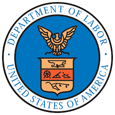
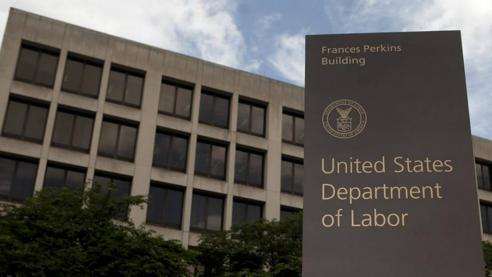

|  |
United States Department of Labor |
Preface
The purpose of this project is to provide clear and digestible information on the United States Department of Labor as of October 2023, as well as offer a quiz on the information as an optional, but helpful learning tool.
What Does the Department of Labor Do?
As put by usa.gov "The Department of Labor administers federal labor laws to guarantee workers' rights to fair, safe, and healthy working conditions, including minimum hourly wage and overtime pay, protection against employment discrimination, and unemployment insurance."
The Department of Labor puts out a mission statement every year in order to lay out a plan of action for the upcoming year given the knowledge of the budget that has been requested. So let's first dive into the budget, and then to the plan for the budget, and finally how some of this might be executed in reality.
|  |
Budget The budget is $15.1 billion in discretionary budget authority and 17,778 full-time equivalent employees (FTE), with additional mandatory funding and FTE.
|
Current Plans for 2024
With the current budget for 2024, the Department of Labor plans to accomplish many goals. Some of which include: strengthening the capabilities of the department through hiring and IT modernization; strengthening the federal-state unemployment compensation program; protecting workers' rights, health, and safety, on top of compensation; supporting evidence-based training opportunities which could lead towards good jobs and careers; and fully enforcing anti-discrimination laws.
How Will the United States Department of Labor Accomplish Some of These Tasks?
Networking & The Internet
| Idea |
Planned Solution |
| Building Equitable Pathways to Prosperity |
As previously mentioned in the Department of Labor's 2024 plans, one of the ideas mentioned was to support evidence-based training opportunities. The Department of Labor plans on doing this by setting aside $3.7 billion of their budget request in order to make employment and training services available to dislocated workers, low-income adults, and disadvantaged youth as well as veterans and military spouses. Of this $3.7 billion, $335 million has been allocated to racial and gender equity focued programs, $100 million has gone towards community colleges, $348 million has gone towards Veteran related programs, and much more.
|
| Protecting and Empowering Workers |
Another mentioned topic was the safety, health, and rights of the workers. In order to increase and/or maintain these, $2.3 billion has been allocated to a number of areas which fall under one of these three categories. Osha (Occupational Safety and Health Administration) has seen a $106 million increase over the 2023 fiscal year, and MSHA (Mine Safety and Health Administration) has increased by $50 million in order to increase the enforcement presence and outreach of both adminisrations. Two other notable increases include The Wage and Hour Division (WHD) by $81 million in order to promote the fair treatment of workers, and The Office of Federal Contractor Compliance Programs (OFCCP) by $40 million enabling them to fully enforce anti-discrimination laws.
|
| Unemployment |
The Department of Labor will allocate 2.9 billion of the requested 15.1 billion towards unemployment insurance (UI). With these funds allocated, it would be possible to process an average of around 2.3 million continued claims per week. The Budget includes $196 million above the 2023 fiscal year in order to improve the states’ ability to serve claimants more quickly and effectively. The request continues the contingency reserve language that provides for additional funds to meet unanticipated UI workloads. The request also includes $9,000,000 for continued support for the UI Integrity Center of Excellence.
|